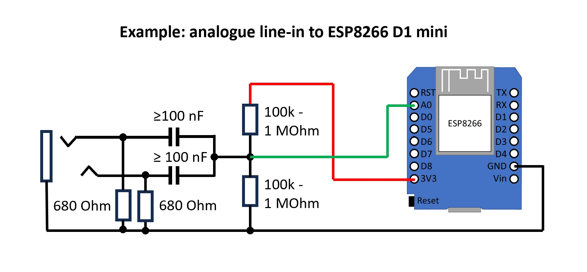

Так, є два варіанти:
1. Підготувати аналоговий лінійний вихід або сигнал з навушників за допомогою простої схеми і підключити його до входу АЦП з ESP8266 або ESP32. В цьому випадку все працює як з аналоговим мікрофоном. Якість тут теж не найкраща, оскільки АЦП ESP8266/ESP32 не дуже добре перетворює аудіосигнали, а схема формування сигналу дуже проста, але не дуже хороша. Крім того, чутливість може бути досить низькою, так що все це працює лише при високій гучності сигналу.

У деяких випадках можна обійтися без цієї схеми і підключити GND джерела звуку і аудіоканал (лівий або правий) безпосередньо до ESP (GND і аналоговий вхід, наприклад, вивід A0 на ESP8266 або GPIO36 на ESP32). Це рішення є досить брудним обхідним шляхом, і якість може бути як кращою, так і гіршою.
2. Перетворіть аналоговий лінійний сигнал або сигнал з навушників в цифровий сигнал I2S за допомогою спеціального аналого-i2s адаптера (на основі, наприклад, мікросхем CirrusLogic CS5343 або TI PCM1808 або es7243), а потім підключіть його до ESP32. В цьому випадку все працює так само, як і з цифровим I2S мікрофоном. Єдина відмінність від I2S-мікрофона полягає в тому, що вам потрібен додатковий PIN-код для сигналу MCLK (Master Clock), який може генеруватися ESP32 тільки на GPIO 0, 1 або 3. Інша складність полягає в тому, що MCLK - це високочастотний сигнал, і він повинен бути підключений дуже точно і мати короткі дроти. Для стабільності краще використовувати готовий контролер зі спеціальним адаптером Line-In до I2S. Перевагою є найкраща якість, хороша чутливість і найкраща звукова реакція користувача.